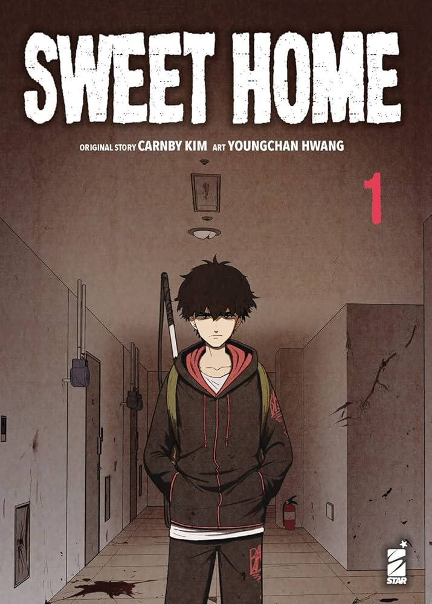
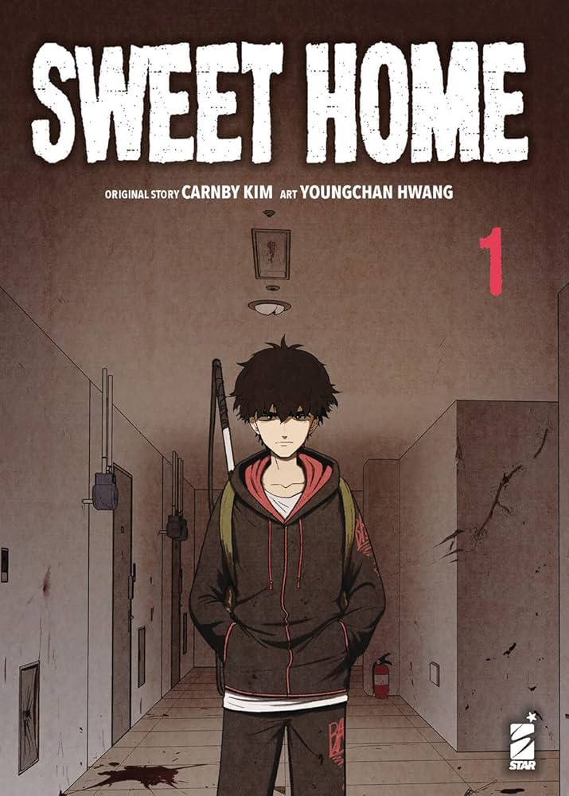

Esta página muestra algunos manhwas, manhuas y mangas.
Esta página muestra algunos manhwas, manhuas y mangas.

 



| Titulo | Historia | Calificación |
|---|---|---|
| Lector omnisciente | En ese entonces, Dokja no tenía idea de que su novela web favorita, Tres maneras de sobrevivir al apocalipsis, cobraría vida y que solo él sabría cómo iba a terminar el mundo. Tampoco tenía idea de que se convertiría en el protagonista de esta novela transformada en realidad. Ahora Dokja debe embarcarse en un viaje para alterar el curso de la historia y salvar a la humanidad de una vez por todas. | 5/5 |
| Asesino de la Luna a la Deriva | Pyo Wol era un huérfano que deambulaba por el continente hasta que un día es secuestrado y criados durante 7 años en la oscuridad para una única misión que sale mal | 4/5 |
| Sweet Home | Después de una tragedia familiar inesperada, un solitario estudiante de preparatoria se ve obligado a abandonar su hogar, solo para encontrarse con algo mucho más aterrador: una realidad donde los monstruos quieren exterminar a la humanidad. Ahora debe pelear junto a un puñado de héroes reticentes para salvar el mundo antes de que sea demasiado tarde. | 5/5 |
| El mundo despues del fin | Los humanos fueron convocados a la Torre repentinamente para convertirse en “Caminantes”, Su misión era despejar las 100 plantas de la Torre para salvar el mundo. Años más tarde, en la planta 77 se descubrió la “Piedra de la Regresión”. Los Caminantes ahora podían “volver” al pasado. Con la esperanza de crear otro pasado, sacrificando el futuro, poco a poco todos se fueron, pero se formó la última esperanza de la humanidad, “Carpe Diem”, un grupo formado por personas que se negaban a abandonar el mundo. Un tiempo después, el último caminante llegó a la planta 100. | 4.5/5 |
| Helmut: el niño abandonado | Helmut era un niño que había sido abandonado en el Bosque de las Bestias Mágicas al nacer. Criado por las Bestias Mágicas, el primer humano que conoció fue el Santo de la Espada Darien. Poco sabía Helmut que ese encuentro fortuito pronto sacudiría los cimientos de su destino... | 4/5 |
| Dungeon Seeker | Junpei Takeda, un estudiante de secundaria, quien es amigo de la infancia con Noriko Tatsumiya, y el agresor Kido Shouta. Un día, durante el curso normal de la intimidación de Junpei, fueron llevados repentinamente a un mundo diferente por un capricho de «Dios». Pero resulta que las estadísticas de Junpei fueron aún peor que un agricultor promedio. Engañado y llevado a un laberinto mortal con la unica esperanza de sobrevivir, camina en un viaje hacia su venganza. | 4/4 |
| Cultivator against hero society | Un poderoso cultivador inesperadamente fue transportado a otra dimensión y llego al mundo moderno con héroes. En este pequeño mundo, la lucha entre el cultivo y los superhéroes comenzará. | 4.5/5 |
| Father Unrivaled | Gajang Noh es un hombre fuerte, dedicado y humilde, con un gran respeto por las artes marciales. Después de la muerte de su encantadora esposa, este matón a sueldo solo quiere un trabajo fácil que le permita ser un buen padre para sus tres pequeños bebés. Incluso está dispuesto a hacer guardia y defenderse de los luchadores aficionados si eso significa que puede regresar a casa sano y salvo cada noche. Pero cuando una secta espeluznante comienza a robar niños de la ciudad, Gajang debe aceptar el desafío y descubrir su verdadero potencial de guerrero. | 4/5 |
| Kimetsu No Yaiba | Tanjirou es el hijo mayor en una familia quien perdió a su padre. Un día, va de visita a otro pueblo para vender carbón, y termina quedándose a pasar la noche en la casa de un lugareño, ya que abunda el rumor de un demonio que ronda por las montañas por la noche. Cuando vuelve a casa al siguiente día, una tragedia lo estaba esperando. | 4.5/5 |
| Kagurabachi | Chihiro, un joven con aspiraciones de convertirse en un forjador de espadas, entrena todos los días bajo la tutela de su padre, un forjador de gran renombre. Mientras su padre es de naturaleza bromista, Chihiro es más reservado. Juntos, creían que sus días llenos de risas durarían eternamente, hasta que un día, la tragedia irrumpe en sus vidas, tiñéndolas de sangre. El ardor se enciende en el corazón de Chihiro, impulsándolo a empuñar su espada en busca de venganza. | 4.5/5 |
Algunos manhwas, manhuas y mangas pueden llegar a ser serializados si son populares.